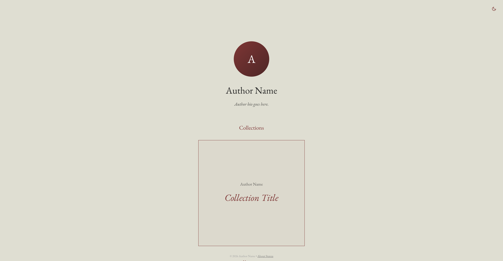
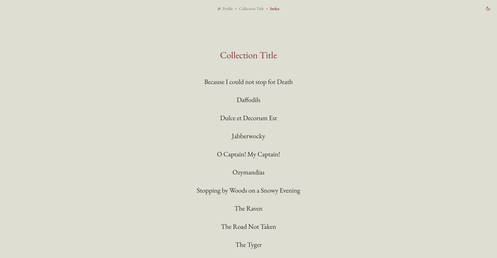
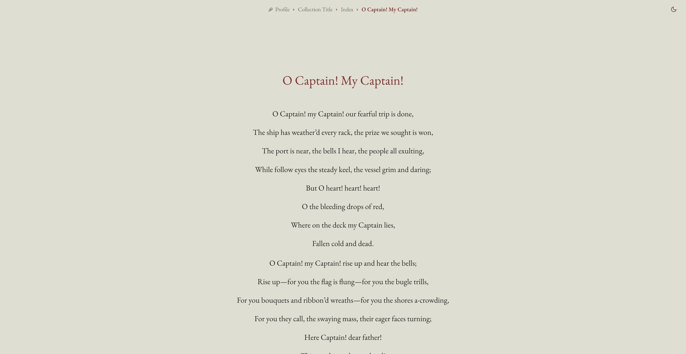

In an era of fleeting notifications and algorithmic noise, poetry is an act of resistance. It requires space, silence, and focus. We built Stanza for the poet who is tired of fighting for attention on platforms designed for distraction.
Stanza isn't a social network; it's a digital gallery. It's an elegant, high-performance stage where the only thing that matters is the rhythm of your lines and the breath between your words.
Chapter II
The Stanza Experience
Typography as Soul
We believe that the visual weight of a word changes its meaning. Stanza is draped in EB Garamond, the timeless humanist typeface. Every serif and stroke is rendered with crisp, classical precision, turning your digital screen into a premium paper anthology.
Curated Identity
Your author profile is the heart of your sanctuary. Upload a profile photo, craft a compelling bio, and let your readers know the person behind the verses. Stanza presents your identity with the same elegance as your work, ensuring a professional and intimate connection with your audience.
The Typewriter Reimagined
Forget complex dashboards. Stanza features the built-in Editor, a distraction-free WYSIWYG Markdown interface. With its floating pill-style toolbar and invisible UI, the technology vanishes, leaving you alone with your thoughts. Format stanzas, add links, and craft your work in real-time.
The Freedom of Files (No Database)
Stanza is built on a "Flat-File" architecture. There are no heavy databases to set up, no SQL to manage, and no "cloud" to lose your data in. Your poems are stored as simple Markdown files on your server. It's faster, more secure, and entirely yours.
Markdown: The Digital Parchment
Why simple text? Because text lasts forever. Unlike proprietary formats, Markdown is universal. If the technologies of tomorrow change, your work remains readable. Stanza takes these "parchment" files and renders them into a modern masterpiece, ensuring your legacy is both future-proof and beautiful.
Atmosphere on Demand
Poetry is moody. With a fixed Sun/Moon toggle, readers can instantly switch between a crisp Light Mode and a deep, intimate Dark Mode. Beyond lighting, Stanza offers precision alignment (Left, Center, Right) and smart sorting, allowing you to curate the exact visual rhythm of your collection.
A Universal Voice (Native Bilingual)
Language should never be a barrier to emotion. Stanza features deep, native support for English and Greek. Upload a translation (e.g., poem_el.md), and Stanza automatically pairs it with the original, allowing readers to toggle between languages without losing their place.
The Anthology Grid
Host your entire literary world under one roof. Stanza's Multi-Collection Architecture allows you to create distinct anthologies for different eras, styles, or languages—all accessible from a single, beautiful master landing page.
Chapter III
Why Stanza is Different
Feature
Stanza
Mainstream CMS
Social Media
Setup
1 Minute
1 Hour+
Instant
Data Ownership
100% Yours
Complex Export
They Own It
Speed
Lightning (No DB)
Average (DB heavy)
Variable
Atmosphere
Focused / Pure
Cluttered
Ad-driven
Maintenance
Zero
High (Updates/Security)
N/A
Chapter IV
The Creator's Workflow
The One-Minute Install
Drop the Stanza files onto any PHP server. No "Installation Wizard," no database passwords.
Write or Upload
Use the elegant Editor to write directly in your browser, or simply upload your existing .md or .txt files.
Automatic Elegance
Stanza automatically handles stanza spacing and adds graceful reveal-on-scroll animations to your text.
Own Your Legacy
Since everything is a file, you can back up your entire site just by downloading a folder. Your data is never trapped.
Chapter V
Technical Purity
Blazing Speed: Instant TTFB. No database queries means zero lag.
Eco-Friendly: No database server means a lower carbon footprint for your digital hosting.
Privacy-First: No tracking cookies, no external scripts, no analytics bloat.
Fully Responsive: Looks like a masterpiece on everything from a phone to a wide-screen monitor.
Plates
The Platform in Images

Plate I
The Home Sanctuary

Plate II
The Anthology Grid

Plate III
Poetry Reading View
Plate IV
Collection Management
Plate V
The Editor
Plate VI
Author Identity
Your Words Deserve a Stanza.
Stop posting into the void. Give your poetry the dedicated, elegant home it deserves.
Τα λόγια σας δεν χρειάζονται ένα "feed". Χρειάζονται ένα σπίτι. Το Stanza είναι το μινιμαλιστικό, ταχύτατο καταφύγιο όπου η ποίησή σας βρίσκει την τελική της, κομψή μορφή.
Σε μια εποχή εφήμερων ειδοποιήσεων και αλγοριθμικού θορύβου, η ποίηση είναι μια πράξη αντίστασης. Απαιτεί χώρο, σιωπή και συγκέντρωση. Δημιουργήσαμε το Stanza για τον ποιητή που κουράστηκε να παλεύει για προσοχή σε πλατφόρμες σχεδιασμένες για απόσπαση.
Το Stanza δεν είναι κοινωνικό δίκτυο· είναι μια ψηφιακή γκαλερί. Είναι μια κομψή σκηνή υψηλών επιδόσεων όπου το μόνο που έχει σημασία είναι ο ρυθμός των στίχων σας και η ανάσα ανάμεσα στις λέξεις σας.
Κεφάλαιο II
Η Εμπειρία Stanza
Τυπογραφία με Ψυχή
Πιστεύουμε ότι το οπτικό βάρος μιας λέξης αλλάζει το νόημά της. Το Stanza "ντύνεται" με την EB Garamond, τη διαχρονική ουμανιστική γραμματοσειρά. Κάθε λεπτομέρεια αποδίδεται με κλασική ακρίβεια, μετατρέποντας την ψηφιακή σας οθόνη σε μια premium έντυπη ανθολογία.
Επιμελημένη Ταυτότητα
Το προφίλ σας είναι η καρδιά του καταφυγίου σας. Ανεβάστε μια φωτογραφία, γράψτε ένα βιογραφικό και συστηθείτε στο κοινό σας. Το Stanza παρουσιάζει την ταυτότητά σας με την ίδια κομψότητα όπως και το έργο σας.
Η Γραφομηχανή του Σήμερα
Ξεχάστε τα περίπλοκα διαχειριστικά. Το Stanza διαθέτει τον ενσωματωμένο Επεξεργαστή, ένα περιβάλλον Markdown (WYSIWYG) χωρίς περισπασμούς. Με την αιωρούμενη εργαλειοθήκη και το αόρατο UI, η τεχνολογία υποχωρεί, αφήνοντάς σας μόνο με τις σκέψεις σας.
Η Ελευθερία των Αρχείων σας (Χωρίς Βάση Δεδομένων)
Το Stanza βασίζεται σε μια αρχιτεκτονική "Flat-File". Δεν υπάρχουν βαριές βάσεις δεδομένων, ούτε SQL για διαχείριση. Τα ποιήματά σας αποθηκεύονται ως απλά αρχεία Markdown στον δικό σας διακομιστή. Είναι πιο γρήγορο, πιο ασφαλές και εξ ολοκλήρου δικό σας.
Markdown: Η Ψηφιακή Περγαμηνή
Γιατί απλό κείμενο; Γιατί το κείμενο ζει για πάντα. Σε αντίθεση με τα κλειστά format, το Markdown είναι παγκόσμιο. Αν οι τεχνολογίες του αύριο αλλάξουν, το έργο σας παραμένει αναγνώσιμο. Το Stanza μετατρέπει αυτές τις "περγαμηνές" σε ένα σύγχρονο αριστούργημα.
Ατμόσφαιρα κατά Παραγγελία
Η ποίηση έχει διαθέσεις. Με τον σταθερό διακόπτη Ήλιου/Φεγγαριού, οι αναγνώστες μπορούν να επιλέξουν ανάμεσα στο καθαρό Light Mode και το οικείο, βαθύ Dark Mode. Επιπλέον, το Stanza προσφέρει ευελιξία στοίχισης και έξυπνη ταξινόμηση, επιτρέποντάς σας να ορίσετε τον ακριβή οπτικό ρυθμό της συλλογής σας.
Παγκόσμια Φωνή (Εγγενώς Δίγλωσσο)
Η γλώσσα δεν πρέπει να είναι εμπόδιο στο συναίσθημα. Το Stanza διαθέτει πλήρη υποστήριξη για Αγγλικά και Ελληνικά. Ανεβάστε μια μετάφραση και το Stanza θα τη συγχρονίσει αυτόματα με το πρωτότυπο.
Το Πλέγμα της Ανθολογίας
Φιλοξενήστε ολόκληρο τον λογοτεχνικό σας κόσμο κάτω από την ίδια στέγη. Η Αρχιτεκτονική Πολλαπλών Συλλογών του Stanza σας επιτρέπει να δημιουργείτε διαφορετικές ανθολογίες για διαφορετικές εποχές, στυλ ή γλώσσες.
Κεφάλαιο III
Γιατί το Stanza Διαφέρει
Χαρακτηριστικό
Stanza
Κοινά CMS
Social Media
Εγκατάσταση
1 Λεπτό
1 Ώρα+
Άμεσα
Ιδιοκτησία Δεδομένων
100% Δικά σας
Δύσκολη Εξαγωγή
Τους Ανήκουν
Ταχύτητα
Αστραπιαία
Μέτρια
Μεταβλητή
Ατμόσφαιρα
Καθαρή / Εστιασμένη
Φορτωμένη
Γεμάτη Διαφημίσεις
Συντήρηση
Μηδενική
Υψηλή
N/A
Κεφάλαιο IV
Πώς να Δημοσιεύσετε το Έργο σας
Εγκατάσταση σε ένα Λεπτό
Μεταφέρετε τα αρχεία του Stanza σε οποιονδήποτε διακομιστή με PHP. Χωρίς "Οδηγούς Εγκατάστασης" και κωδικούς βάσεων δεδομένων.
Γράψτε ή Ανεβάστε
Χρησιμοποιήστε τον Επεξεργαστή ή απλώς ανεβάστε τα υπάρχοντα αρχεία σας .md ή .txt.
Αυτόματη Κομψότητα
Το Stanza αναλαμβάνει τα διαστήματα και προσθέτει διακριτικά εφέ εμφάνισης (reveal-on-scroll) στο κείμενό σας.
Η Κληρονομιά σας Ανήκει
Εφόσον όλα είναι αρχεία, μπορείτε να κρατήσετε αντίγραφο ολόκληρου του site σας απλώς κατεβάζοντας έναν φάκελο.
Κεφάλαιο V
Τεχνική Καθαρότητα
Αστραπιαία Ταχύτητα: Άμεσο TTFB. Χωρίς ερωτήματα βάσης δεδομένων, μηδενική καθυστέρηση.
Οικολογικό: Χωρίς διακομιστή βάσης δεδομένων σημαίνει μικρότερο αποτύπωμα άνθρακα.
Προστασία Προσωπικών Δεδομένων: Χωρίς tracking cookies, εξωτερικά scripts, ή analytics bloat.
Πλήρως Responsive: Φαίνεται σαν αριστούργημα σε όλες τις συσκευές.
Πινάκες
Η Πλατφόρμα σε Εικόνες
Πίνακας I
Το Καταφύγιο
Πίνακας II
Το Πλέγμα της Ανθολογίας
Πίνακας III
Προβολή Ανάγνωσης
Πίνακας IV
Διαχείριση Συλλογών
Πίνακας V
Ο Επεξεργαστής
Πίνακας VI
Η Ταυτότητα του Δημιουργού
Οι Λέξεις σας Αξίζουν ένα Stanza.
Σταματήστε να δημοσιεύετε στο κενό. Δώστε στην ποίησή σας το αφιερωμένο, κομψό σπίτι που της αξίζει.